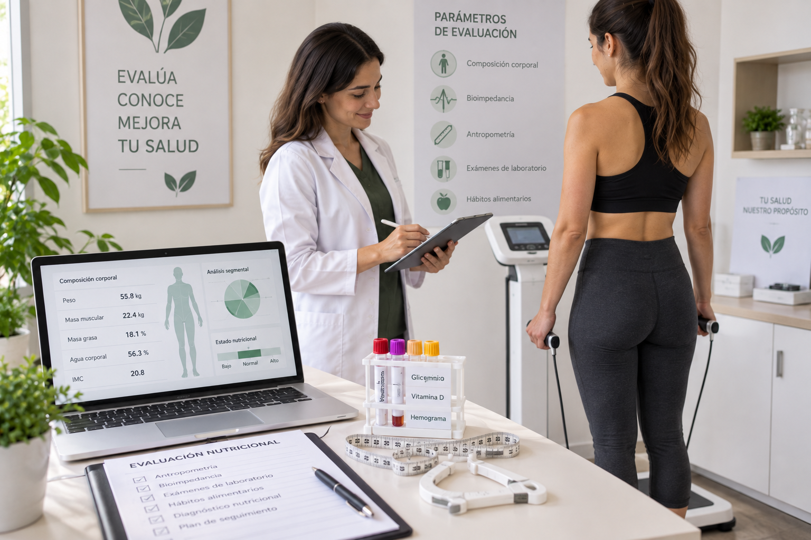
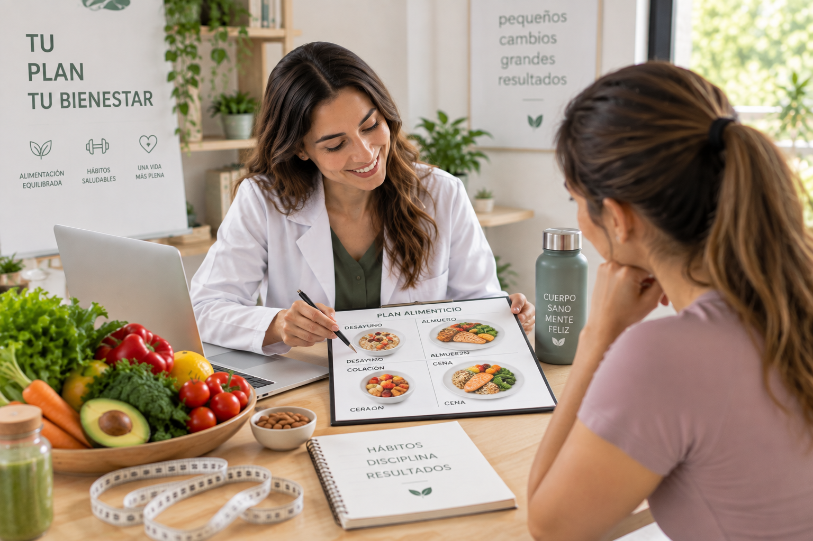
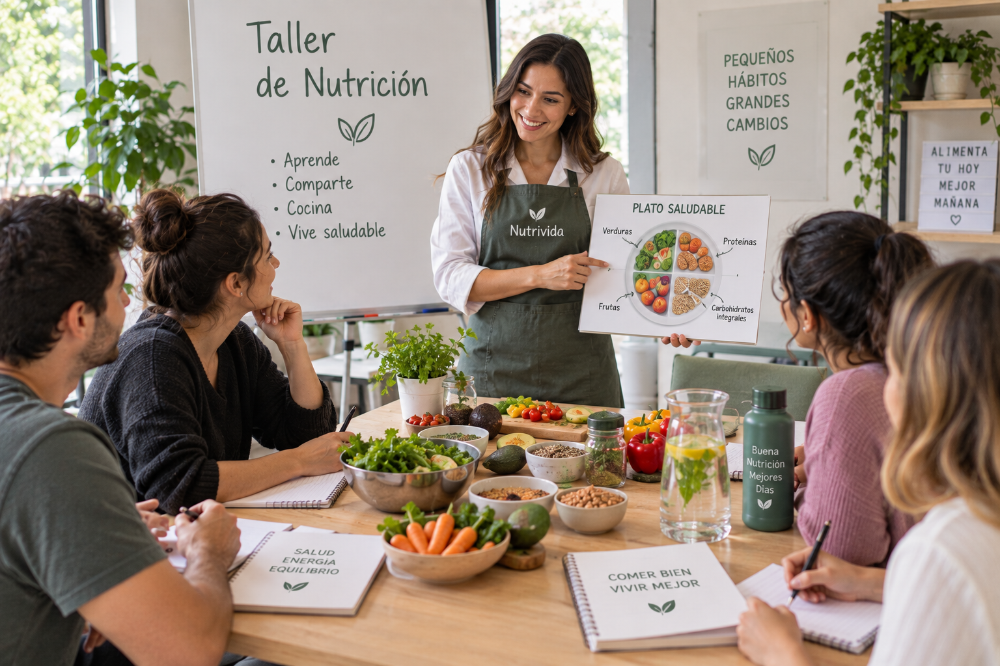

No todos necesitamos lo mismo. Tu plan tampoco debería serlo.
Porque tu alimentación debe adaptarse a tu vida, no al revés. Sigue tu proceso de forma simple y personalizada.
Agenda tu atención ahoraNutricionistas en Temuco
Te acompañamos en temas como sobrepeso y obesidad, colesterol elevado, resistencia a la insulina y diabetes, hiper e hipotiriodismo, menopausia, enfermedades autoinmunes, colon irritable, acidez, reflujo, intolerancia y desórdenes alimentarios.
Planes y Servicios
Evaluaciones Nutricionales
Obtén una visión más completa de tu estado nutricional mediante evaluaciones especializadas. Realizamos antropometría, bioimpedanciometría, análisis de hábitos alimentarios y revisión de exámenes de laboratorio en contexto nutricional.

Planes de Alimentación
Diseñamos planes personalizados de acuerdo con tus objetivos y necesidades. Contamos con alternativas para pérdida de peso, nutrición deportiva, control de diabetes e hipertensión, alimentación vegetariana y vegana, además de planes para niños y niñas.

Talleres Grupales
Aprende sobre alimentación saludable de manera práctica y cercana. Participa en talleres de alimentació equilibrada, cocina nutritiva y nutrición para deportistas, con actividades diseñadas para aprender y compartir en grupo.
